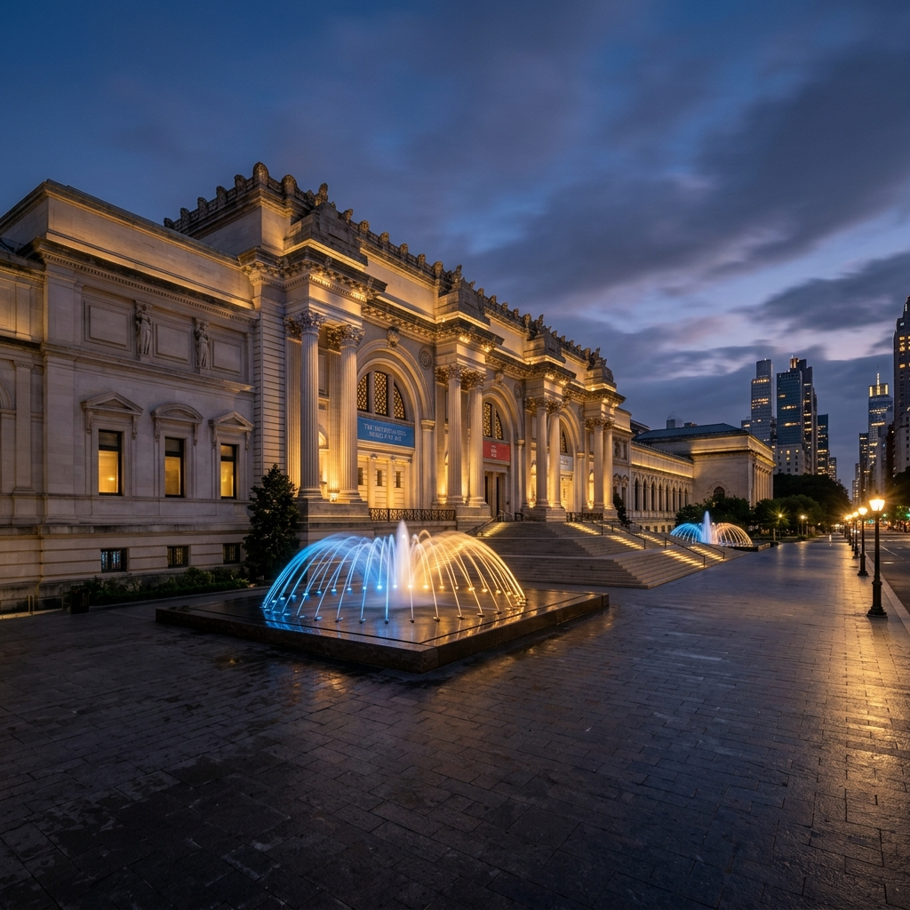

The Cathedral of History: The Met

Walking into the Metropolitan Museum of Art is an act of surrender. From the Temple of Dendur to the European galleries, the Met isn't a museum—it’s a physical map of our collective story.
📍 Teleport to 1000 5th AveThe Modern Mecca: MoMA
If the Met is history, MoMA is the future. It’s where you’ll find the mecca of modernism—from Starry Night to Warhol’s cans—all in a sleek midtown sanctuary.
📍 Teleport to 11 W 53rd StLate Night at the Vanguard
Descend the red-carpeted stairs into the Village Vanguard and you are entering the holy grail of Jazz. There is a specific silence that falls over the room just before the first note is struck.
📍 Teleport to 178 7th Ave S